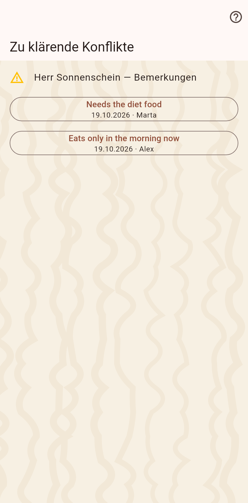

Felder, die zwei Leute gleichzeitig geändert haben, bevor sich ihre Geräte abgeglichen hatten. Jede Zeile zeigt beide Werte; wähle den richtigen, und die Wahl erreicht jedes Gerät.

Die beiden Werte sind Knöpfe mit dem, wer sie schrieb und wann; ein Tipp behält einen und schreibt ihn als gewöhnlichen Eintrag, damit jeder Partner die Entscheidung mit dem nächsten Abgleich bekommt. Die Seite listet die offenen Konflikte und schließt sich, wenn der letzte entschieden ist; bis dahin nennt das Menü der Startseite sie mit einer Zahl.
Auf der Ankunftsseite nach einem Abgleich, auf dieser Seite aus dem Menü der Startseite, und als Warnzeichen auf der Zeile des Feldes auf der Seite der Katze.